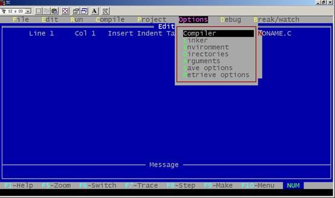
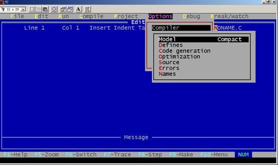
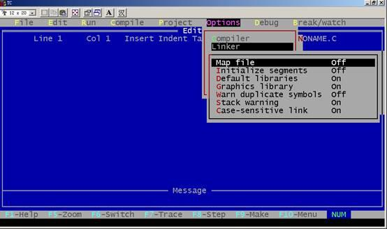
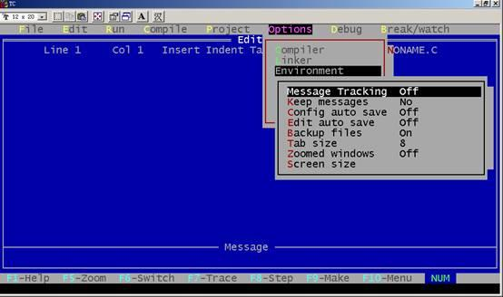
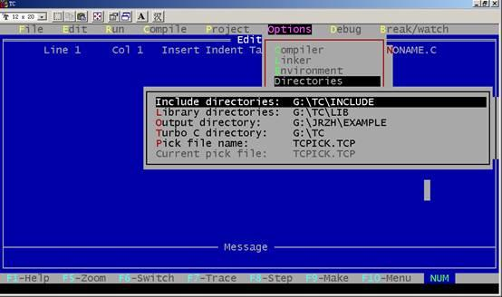

按Alt+O可进入Options菜单, 该菜单对初学者来说要谨慎使用，该菜单有以下几个内容，如图所示：


1) Model：共有Tiny, small, medium, compact, large, huge 六种不同模式可由同户选 择。
) Define：打开一个宏定义框, 同户可输入宏定义。多重定义可同分号, 赋值可用等号。
3) Code generation：它又有许多任选项, 这些任选项告诉编译器产生什么样的目标代码。
☆Calling convention 可选择C或Pascal方式传递参数。
☆Instruction set 可选择8088/8086或80186/8086指令系列。
☆Floating point 可选择仿真浮点、数学协处理器浮点或无浮点运算。
☆Default char type 规定char的类型。
☆Alignonent 规定地址对准原则。
☆Merge duplicate strings 作优化用, 将重复的字符串合并在一起。
☆Standard stack frame 产生一个标准的栈结构。
☆Test stack overflow 产生一段程序运行时检测堆栈溢出的代码。
☆Line number 在.OBJ文件中放进行号以供调试时用。
☆OBJ debug information 在.OBJ文件中产生调试信息。
4) Optimization：它又有许多任选项。
☆Optimize for选择是对程序小型化还是对程序速度进行优化处理。
☆Use register variable 用来选择是否允许使用寄存器变量。
☆Register optimization尽可能使用寄存器变量以减少过多的取数操作。
☆Jump optimization通过去除多余的跳转和调整循环与开关语句的办法, 压缩代码。
5) Source：它又有许多任选项。
☆Indentifier length说明标识符有效字符的个数, 默认为3个。
☆Nested comments是否允许嵌套注释。
☆ANSI keywords only是只允许ANSI关键字还是也允许Turbo C.0关键字。
6) Error
☆Error stop after多少个错误时停止编译, 默认为5个。
☆Warning stop after多少个警告错误时停止编译, 默认为100个。
☆Display warning
☆Portability warning移植性警告错误。
☆ANSI Violations侵犯了ANSI关键字的警告错误。
☆Common error常见的警告错误。
☆Less common error少见的警告错误。
7)Names?：用于改变段(segment)、组(group) 和类(class)的名字,默认值为CODE, DATA, BSS。

1) Map file menu 选择是否产生.MAP文件。
) Initialize segments是否在连接时初始化没有初始化的段。
3) Devault libraries是否在连接其它编译程序产生的目标文件时去寻找其缺省库。
4) Graphics library 是否连接graphics库中的函数。
5) Warn duplicate symbols当有重复符号时产生警告信息。
6) Stack warinig是否让连接程序产生No stack的警告信息。
7) Case-sensitive link是否区分大、小写字。

1) Message tracking：
Current file 跟踪在编辑窗口中的文件错误。
All files跟踪所有文件错误。
Off 不跟踪。
) Keep message ：编译前是否清除Message窗口中的信息。
3)Config auto save：选on时,在Run,Shell或退出集成开发环境之前,如果Turbo C .0的配置被改过, 则所做的改动将存入配置文件中。选off时不存。
4) Edit auto save：是否在Run或Shell之前, 自动存储编辑的源文件。
5) Backup file：是否在源文件存盘时产生后备文件(.BAK文件)。
6) Tab size：设置制表键大小, 默认为8。
7) Zoomed windows：将现行活动窗口放大到整个屏幕, 其热键为F5。
8) Screen size设置屏幕文本大小。

（1） Include directories：包含文件的路径, 多个子目录用";"分开。
（） Library directories：库文件路径, 多个子目录用";"分开。
（3） Output directoried：输出文件(.OBJ, .EXE, .MAP文件)的目录。
（4） Turbo C directoried：Turbo C 所在的目录。
（5） Pick file name：定义加载的pick文件名, 如不定义则从currentpick file中取。